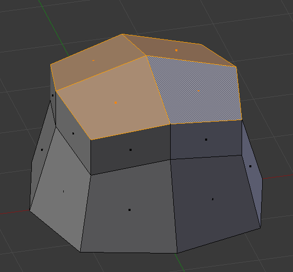
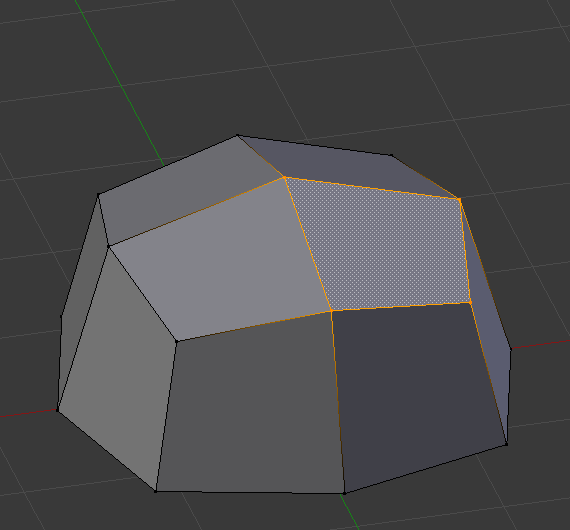
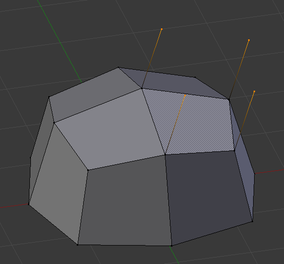
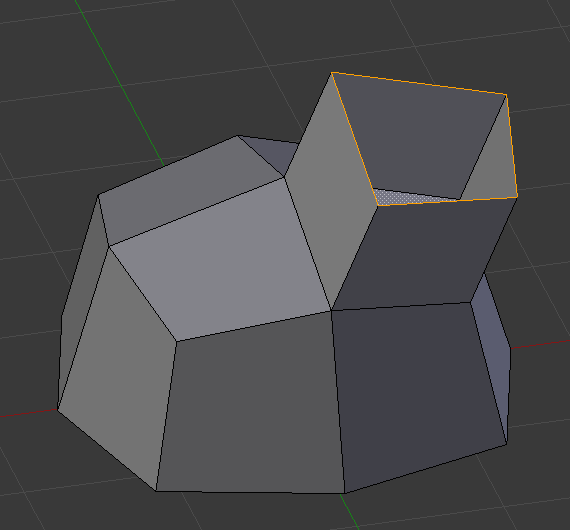

挤出¶
Extrusion tools duplicate vertices, while keeping the new geometry connected with the original vertices. Vertices are turned into edges and edges will form faces.

Single vertex extruded. |

Single edge extruded. |
This tool is of paramount importance for creating new geometry. It allows you to create parallelepipeds from rectangles and cylinders from circles, as well as easily creating such things as tree limbs.
The axis on which vertices and edges are extruded along can be set interactively. Faces are extruded by default along their averaged normal. The extrusion can be limited to a single axis by specifying an axis; see 轴向锁定.
The extrude tools differentiate in how the new geometry is connected in itself.
整体挤出¶
参考
EOnly the border loop gets extruded. The inner region of the selection gets moved unchanged with the extrusion.

Selected face. |

Set to Z axis. |
{kind=link}
Details¶
虽然过程是相当直观的，挤出 背后的原理如下面讨论那样是相当复杂的
- 首先，该算法确定挤出的外侧循环边，这些循环边将被改变成面。默认情况下（见下文），该算法认为属于两个或两个以上选定的面的边为内侧边，也就不是外侧循环边。
- 然后这些外侧循环边将被改变成面。
- 如果这些循环边只属于整个网格中的一个面，那么所有的选定面将被复制并连接到新创建的面。例如，矩形在此过程中将生成平行六面体。
- 在其他情况下，选择的面将被连接到新创建的面，但并不被复制。这可以防止不想要的面被保留在产生网格的内部。这种区别是非常重要的，因为它确保用挤出所产生的网格结构始终条理分明且保持封闭。
- 当挤压完全闭合的结构时（例如立方体的所有六个面），挤出的结果仅仅是一个复制体，整个结构将被复制，没有任何地方和原本的结构相连。
- 那些能形成开放的循环边的不属于选中面的边，在挤压时将被复制并在它和原来的边之间填充而形成新的面。
- 不属于选中边的孤立顶点，在挤压时将被复制并与原顶点相连形成新的边。
各自挤出¶
参考
各自挤出 允许你挤出一系列面的每个单独面，而不是作为一整体。这些面将沿着它们各自的法线挤出，而不是它们的平均值。这有几个后果：一是 内部 边（即两个选中面之间的边）不再删除（原来的面会删除）。

Selection of multiple faces. |

Extruded using extrude region. |

Extruded using Extrude Individual. |
{kind=link}
仅挤出边和顶点¶
参考
如果对选中的顶点进行挤出，而他们之间并没有形成边或面，那么他们将如预期那样挤出：构建出一个 非流形 边。同样，如果选中的边不形成一个面，它们将挤出以形成一个面。
当选中顶点形成了边或面，这将如选中了边那样挤出。对于形成了面的边的挤出也是同样的道理。
要强制顶点或边选择仅挤出顶点或边，使用`Alt-E`来分别获取仅挤出边和仅挤出顶点。

Vertex selected. |

Vertices Only extrude. |

Edge selected. |

Edge Only extrude. |
{kind=link}
{kind=link}
{kind=link}
Extrude Repeat Mesh¶
参考
This tool has to be called from 操作搜索. If the selection is not manifold it's extruded the specified number of times, else it behaves similar to the 阵列修改器. The extrusion is aligned along the Z axis of the view.
- Offset
- Distance between the instances.
- Steps
- Number of instances.